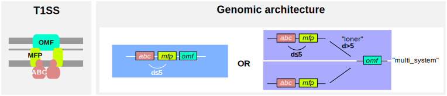

Gallery of examples of MacSyFinder’s models¶
Table of contents of gallery
Here follows a “gallery” of MacSyFinder models we have developed over the years, attempting to describe the reasoning behind the modeling process.
These examples are extracted from published work, see the following references (they include more examples):
Abby et al. 2016, Scientific Reports, for the description of the T1SS and T3SS models (and way more models not discussed here).
Abby and Rocha 2012, PLoS Genetics, for the evolutionary study of the T3SS and the bacterial flagellum, and how were designed the corresponding profiles.
Denise et al. 2019, PLoS Biology, for the description of the T2SS and type IV-filament super-family models.
Getting started with a (not-so-)simple example: modelling the T1SS¶
1. Identifying genetic components¶
The type I secretion system (T1SS) consists in three conserved components:
an ABC transporter (ABC)
a membrane-fusion protein (MFP)
an outer membrane protein (OMF)
For their detection, we therefore need to provide HMM profiles for each component, for example: “abc.hmm”, “mfp.hmm” and “omf.hmm”. These can be specifically designed, or taken from HMM profiles databanks such as PFAM , TIGRFAM or SUPERFAMILY..
Note
For suggestions on how to design specific HMM protein profiles, read our dedicated book chapter:
Identification of Protein Secretion Systems in Bacterial Genomes Using MacSyFinder by Sophie Abby and Eduardo Rocha, in Methods in Molecular Biology (2017).
2. Determining the role of the components¶
From litterature, the three components listed above must be present to have a viable T1SS. Therefore, these are all deemed mandatory in the model of the T1SS.
3. Describing their genetic architecture¶
According to the litteraure, the genes encoding the three components listed above are generally found lying next to each other in genomes. Therefore, these are considered as “single-locus” system. In addition, there is the particular case of the OMF component. It can either be found:
next to the two other components, as explained just below
in some other cases, it can be involved in other cellular machineries functioning, and thus be encoded some place else that at the main T1SS’ locus (in this case, made of ABC+MFP).
Therefore, we can attribute the loner feature to the OMF component.
In addition to the latter exception described, it means that this OMF component can also be involved in the functioning of not a single, but several machineries at the same time. In practice, this would mean that two full sets of T1SS components can be inferred with a single OMF component found in the genome. This corresponds to the multi-system feature.
4. Writing down the model¶
Now that all elements of the model are listed, the model for the T1SS can be written using the dedicated MacSyFinder XML grammar:
<model inter_gene_max_space="5" min_mandatory_genes_required="3" min_genes_required="3" vers="2.0">
<gene name="T1SS_abc" presence="mandatory"/>
<gene name="T1SS_mfp" presence="mandatory"/>
<gene name="T1SS_omf" presence="mandatory" loner="1" multi_system="1"/>
</model>
The case of T3SS and bacterial flagella, or how to distinguish homologous cellular machineries¶
The type III secretion system (T3SS), involved in proteic effectors secretion into eukaryotic cells) and the bacterial flagellum (involved in motility) are evolutionarily related (Abby and Rocha 2012). This can make their annotation in genomes tricky, if only based on core components that can have homologs in both systems.
However, these machineries also have specific core components. With MacSyFinder and the forbidden feature for components, it is possible to model this, and create models for efficient discrimination between homologous machineries.
For a toy example on how to model similar yet distinct machineries, you can also have a look here.
1. Identifying genetic components and determining their role¶
The T3SS is partly homologous to the bacterial flagellum: 8 of its 9 core components are homologous to core components of the flagellum. This is explained by the fact that the T3SS is evolutionarily derived from the flagellum (Abby and Rocha 2012). Yet, the T3SS is made of two dozens of components, and the flagellum, more than twice this number of components:
The flagellum presents specific core components that have no counterpart in the T3SS.
It is also the case of the T3SS, which has one specific core component: the secretin.
Solely based on the specificity of core components, it is possible to distinguish T3SS from flagella. This can be done by listing the specific core components of a given system as mandatory in the system, and as forbidden in the homologous system.
Then, HMM protein profiles can be specifically designed for these components, or can be retrieved from databases such as PFAM , TIGRFAM or SUPERFAMILY.
2. Dealing with components with varied evolutionary origins¶
Another peculiarity of T3SS’ evolutionary history consists in that of the secretin, which has been co-opted (acquired) at least three times independently along T3SS diversification: once from the T2SS, once from the Tad pilus, and once from the Type IVa pilus (Abby and Rocha 2012 , Denise et al. 2019 ).
This means that sometimes, the T3SS secretin will have more sequence similarity for the secretins from these other machineries - and thus that the profile for the T3SS secretin might “miss” these components, whereas profiles for secretins from the T2SS, T4P or Tad might be more efficient to retrieve them.
Using the exchangeables feature, MacSyFinder enables to use different HMM protein profile to search for components that may fill a same function. Therefore, it is possible to list profiles of secretins from other machineries among the set of profiles to use to retrieve all T3SS potential secretins.
In the following drawing, a scheme of a T3SS is shown on the left, and the features listed above are shown on a scheme of the T3SS model, including forbidden components from the flagellum (red crosses), and exchangeable components for the secretin “sctC”, depicted with yellow boxes (with the name of the secretin gene from the T4aP, T2SS and Tad pilus respectively). The inter-gene-max-space parameter - i.e., maximal number of components allowed between two systems’ components to consider them consecutive - is expressed with the “d” letter.

3. Describing the quorum, and genetic architecture of the systems¶
T3SS and bacterial flagella are generally encoded on the form of multi-components loci in genomes. Given the fact that we designed HMM protein profiles only for the most conserved, core components of these machineries, and that it means that several systems’ components can intersperse between the core ones (remember, T3SS has aroound 25 components, and the flagellum >40), we set the inter-gene-max-space parameter (maximal number of components allowed between two systems’ components to consider them consecutive) to 10 in the case of the T3SS, and to 20 in the case of the flagellum.
T3SS and bacterial flagella can be encoded by one, or multiple loci. We therefore use the multi-loci feature to describe their genetic architecture (set to “1”, meaning “True” in the models).
Note
For suggestions on how to set the quorum and genetic architecture parameters, read our dedicated book chapter:
Identification of Protein Secretion Systems in Bacterial Genomes Using MacSyFinder by Sophie Abby and Eduardo Rocha, in Methods in Molecular Biology (2017).
4. Writing down the models¶
Given all the features described above, here is the model of the T3SS:
T3SS.xml
<model inter_gene_max_space="10" min_mandatory_genes_required="7" min_genes_required="7" multi_loci="1" vers="2.0">
<gene name="T3SS_sctC" presence="mandatory">
<exchangeables>
<gene name="T2SS_gspD"/>
<gene name="T4P_pilQ"/>
<gene name="Tad_rcpA"/>
</exchangeables>
</gene>
<gene name="T3SS_sctJ" presence="mandatory"/>
<gene name="T3SS_sctN" presence="mandatory"/>
<gene name="T3SS_sctQ" presence="mandatory"/>
<gene name="T3SS_sctR" presence="mandatory"/>
<gene name="T3SS_sctS" presence="mandatory"/>
<gene name="T3SS_sctT" presence="mandatory"/>
<gene name="T3SS_sctU" presence="mandatory"/>
<gene name="T3SS_sctV" presence="mandatory"/>
<gene name="Flg_fliE" presence="forbidden"/>
<gene name="Flg_flgB" presence="forbidden"/>
<gene name="Flg_flgC" presence="forbidden"/>
</model>
And the model of the Flagellum:
Flagellum.xml
<model inter_gene_max_space="20" min_mandatory_genes_required="9" min_genes_required="10" multi_loci="1" vers="2.0">
<gene name="Flg_sctJ_FLG" presence="mandatory"/>
<gene name="Flg_sctN_FLG" presence="mandatory"/>
<gene name="Flg_sctQ_FLG" presence="mandatory"/>
<gene name="Flg_sctR_FLG" presence="mandatory"/>
<gene name="Flg_sctS_FLG" presence="mandatory"/>
<gene name="Flg_sctT_FLG" presence="mandatory"/>
<gene name="Flg_sctU_FLG" presence="mandatory"/>
<gene name="Flg_sctV_FLG" presence="mandatory"/>
<gene name="Flg_flgB" presence="mandatory"/>
<gene name="Flg_flgC" presence="mandatory"/>
<gene name="Flg_fliE" presence="mandatory"/>
<gene name="T3SS_sctC" presence="forbidden"/>
</model>

{kind=link}